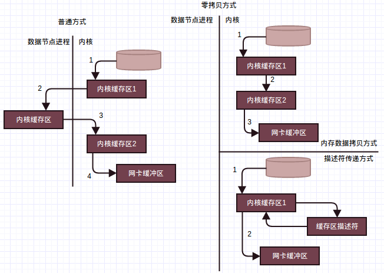

Hadoop版本:Hadoop-1.2.1
参考：《Hadoop技术内幕-深入解析Hadoop Common和HDFS架构设计与实现原理》
本文接DataNode实现源码分析—流接口实现上篇分析DataNode流接口中除写操作外的剩余4中流接口操作:读数据块，数据块替换，数据块拷贝，读数据块校验信息。
1. 读数据块
如上篇分析，读数据块由readBlock负责1
2
3
4
5
6
7
8
9
10
11
12
13
14
15
16
17
18
19
20
21
22
23
24
25
26
27
28
29
30
31
32
33
34
35
36
37
38
39
40
41
42
43
44private void readBlock(DataInputStream in) throws IOException {
long blockId = in.readLong();//读取blockId
Block block = new Block( blockId, 0 , in.readLong());//读取generationStamp并创建Block对象
long startOffset = in.readLong();//开始偏移量
long length = in.readLong();//要读取的数据长度
String clientName = Text.readString(in);//客户端信息
Token<BlockTokenIdentifier> accessToken = new Token<BlockTokenIdentifier>();
accessToken.readFields(in);//口令
OutputStream baseStream = NetUtils.getOutputStream(s, datanode.socketWriteTimeout);
DataOutputStream out = new DataOutputStream(new BufferedOutputStream(baseStream, SMALL_BUFFER_SIZE));
...//安全相关，开启了区块口令时会进行验证，验证失败发送OP_STATUS_ERROR_ACCESS_TOKEN响应
// send the block
BlockSender blockSender = null;
final String clientTraceFmt =
clientName.length() > 0 && ClientTraceLog.isInfoEnabled()
? String.format(DN_CLIENTTRACE_FORMAT, localAddress, remoteAddress,"%d", "HDFS_READ",
clientName, "%d", datanode.dnRegistration.getStorageID(), block, "%d")
: datanode.dnRegistration + " Served " + block + " to " + s.getInetAddress();
try {
try {
blockSender = new BlockSender(block, startOffset, length,
true, true, false, datanode, clientTraceFmt);
} catch(IOException e) {
out.writeShort(DataTransferProtocol.OP_STATUS_ERROR);
throw e;
}
out.writeShort(DataTransferProtocol.OP_STATUS_SUCCESS); // send op status
long read = blockSender.sendBlock(out, baseStream, null); // send data
if (blockSender.isBlockReadFully()) {//发送完整个区块，等待Client的确认
// See if client verification succeeded.
// This is an optional response from client.
try {
if (in.readShort() == DataTransferProtocol.OP_STATUS_CHECKSUM_OK &&
datanode.blockScanner != null) {
datanode.blockScanner.verifiedByClient(block);
}
} catch (IOException ignored) {}
}
...//统计和异常处理等
}
如上，按照HDFS流接口中的数据读取请求帧格式读取相应的信息，包括读取blockId，generationStamp构建Block对象，要读取数据在区块偏移量startOffset，读取的数据长度length，以及客户端信息和口令等。
对于数据读取请求，我们需要发送请求的数据，为此通过Socket构建相应的输出流，数据发送通过BlockSender的sendBlock，要构建相应的BlockSender对象。
如果发送的是整个区块，因为Client会对接收到的数据进行验证，则可以等待Client的确认，当接收到OP_STATUS_CHECKSUM_OK确认数据，表明Client数据接收完成，且经过校验无误，这样该区块由Client验证过了，可以添加到区块扫描器中，标记为Client验证无误，无需再次扫描，如上verifiedByClient
1.1 BlockSender
BlockSender构造1
2
3
4
5
6
7
8
9
10
11
12
13
14
15
16
17
18
19
20
21
22
23
24
25
26
27
28
29
30
31
32
33
34
35
36
37
38
39
40
41
42
43
44
45
46
47
48
49
50
51
52
53
54
55
56
57
58
59
60
61
62
63
64
65
66
67
68
69
70
71
72
73
74
75
76
77
78
79
80
81BlockSender(Block block, long startOffset, long length,
boolean corruptChecksumOk, boolean chunkOffsetOK,boolean verifyChecksum,
DataNode datanode, String clientTraceFmt) throws IOException {
try {
this.block = block;
this.chunkOffsetOK = chunkOffsetOK;
this.corruptChecksumOk = corruptChecksumOk;
this.verifyChecksum = verifyChecksum;
this.blockLength = datanode.data.getVisibleLength(block);
this.transferToAllowed = datanode.transferToAllowed;//是否使用"零拷贝"传输
this.clientTraceFmt = clientTraceFmt;
this.readaheadLength = datanode.getReadaheadLength();
this.readaheadPool = datanode.readaheadPool;
this.shouldDropCacheBehindRead = datanode.shouldDropCacheBehindReads();
//如果存在对应的校验数据文件，读取头部信息，如版本，校验类型，校验块大小
if ( !corruptChecksumOk || datanode.data.metaFileExists(block) ) {
checksumIn = new DataInputStream(
new BufferedInputStream(datanode.data.getMetaDataInputStream(block),BUFFER_SIZE));
// read and handle the common header here. For now just a version
BlockMetadataHeader header = BlockMetadataHeader.readHeader(checksumIn);
short version = header.getVersion();
if (version != FSDataset.METADATA_VERSION) {
LOG.warn("Wrong version (" + version + ") for metadata file for " + block + " ignoring ...");
}
checksum = header.getChecksum();
} else {
checksum = DataChecksum.newDataChecksum(DataChecksum.CHECKSUM_NULL, 16 * 1024);
}
//如果校验块非常大，可能不是一个正确的校验文件
bytesPerChecksum = checksum.getBytesPerChecksum();
if (bytesPerChecksum > 10*1024*1024 && bytesPerChecksum > blockLength){
checksum = DataChecksum.newDataChecksum(checksum.getChecksumType(),
Math.max((int)blockLength, 10*1024*1024));
bytesPerChecksum = checksum.getBytesPerChecksum();
}
checksumSize = checksum.getChecksumSize();
if (length < 0) {//请求长度为负数，则请求为整个区块数据
length = blockLength;
}
endOffset = blockLength;
...//参数检查
offset = (startOffset - (startOffset % bytesPerChecksum));//开始偏移量调整，调整到所属校验块开始位置
if (length >= 0) {
// Make sure endOffset points to end of a checksumed chunk.
long tmpLen = startOffset + length;
if (tmpLen % bytesPerChecksum != 0) {
tmpLen += (bytesPerChecksum - tmpLen % bytesPerChecksum);//结束偏移量调整，调整到所属校验块结束位置
}
if (tmpLen < endOffset) {
endOffset = tmpLen;
}
}
if (offset > 0) {
long checksumSkip = (offset / bytesPerChecksum) * checksumSize;
if (checksumSkip > 0) {
IOUtils.skipFully(checksumIn, checksumSkip);//校验文件输入流定位到正确的开始位置
}
}
seqno = 0;
//获取区块文件输入流并定位到正确的开始位置
blockIn = datanode.data.getBlockInputStream(block, offset);
if (blockIn instanceof FileInputStream) {
blockInFd = ((FileInputStream) blockIn).getFD();
} else {
blockInFd = null;
}
memoizedBlock = new MemoizedBlock(blockIn, blockLength, datanode.data, block);
} catch (IOException ioe) {
IOUtils.closeStream(this);
IOUtils.closeStream(blockIn);
throw ioe;
}
}
传入的参数中chunkOffsetOK表示请求的数据可以在块的任意偏移处，这时在写响应头时会发送实际的开始偏移量
如上，初始化各成员，这里要注意的有一下成员
offset和endOffset，请求的偏移量和长度可能对应的不是整的数据块，即请求的开始偏移量可能在某一数据块偏移量不为0的位置，或者请求偏移量加长度得到的结束偏移量不是在某一数据块的结束位置，如果我们直接把请求的这段区间发送过去，Client计算校验和依据的数据块和DataNode的数据块不一致，这样会验证错误。
因此当开始偏移量不在数据块开始偏移处时，我们需要调整到开始偏移处，结束偏移量不在数据块结束偏移处时，同样要调整到结束偏移处。这样请求的数据和实际发送的数据略有不同，这样是为了验证数据。checksumIn和blockIn，校验文件输入流和区块文件输入流，要定位到对应的开始偏移处。transferToAllowed，决定在传输时是否使用”零拷贝”传输，”零拷贝”将在后面介绍，依据数据节点中的配置，默认情况下会使用。memoizedBlock，用于监测在写数据的过程中本地区块是否改变
构造BlockSender后，区块文件输入流和校验文件输入流已经定位到开始位置，通过sendBlock发送区块，sendBlock时如果要对发送带宽进行控制，需要指定一个节流器
1.2 BlockSender.sendBlock
1 | long sendBlock(DataOutputStream out, OutputStream baseStream, DataTransferThrottler throttler) throws IOException { |
如HDFS流接口中响应格式的描述，会先写响应头，包括校验类型，校验块大小，以及可能的实际开始偏移量。
然后根据是否使用”零拷贝”传输来分配一个包的缓冲区，先介绍”零拷贝”传输。
1.3 零拷贝传输(技术内幕P292-P293)
客户端读取数据块数据时，对于普通的方式，应用通过Linux内核读取文件数据，这些数据需要跨越内核，拷贝到实现为Java应用的数据节点中，然后数据节点再次将数据推送回内核，通过Linux内核写往套接字，这里应用程序只是充当了一个中介角色完全可以避免。因此消除不必要的数据拷贝，内核直接将数据从磁盘文件拷贝到套接字，无需通过应用程序，将大大地提高应用程序的性能，而且还减少了内核与用户模式的上下文切换，这种方式称为”零拷贝”。Java中通过java.nio.channels.FileChannel中的transferTo方法，在Linux(和UNIX)系统上支持零拷贝I/O操作，直接将字节从它被调用的通道上传输到另外一个可写字节通道上，数据无需经过应用程序。
普通方式和零拷贝方式对比如下

- 左边为普通的发送方式，通过输入流，数据节点将磁盘中的数据读入到用户缓存区。如上需要先将数据从磁盘中读入内核缓冲区(1)，然后从内核缓冲区拷贝到用户缓冲区(2)，这样一次读操作，需要引发一次从用户模式到内核模式，和一次内核模式到用户模式的上下文切换。另外，上述步骤1发生在外设(磁盘)和内存间，一般由直接内存存取DMA执行，步骤2的数据拷贝发生在内存中，由CPU执行。调用结束后，数据节点会将数据通过SocketOutputStream的write方法发送往客户端。
write调用再次引发从用户模式到内核模式的上下文切换，数据被再次放到内核缓冲区中，和步骤2一样，由CPU执行，不过这次的内核缓冲区和第一次从磁盘中读数据时使用的内核缓冲区不同，它与目标套接字相关联。write返回时，触发第四次上下文切换，系统再次从内核模式切换到用户模式，同时第四次数据拷贝，即内核缓冲区的数据拷贝到网卡拷贝，会独立地，异步地发生(由DMA引擎执行，所以是一个独立于CPU，和CPU异步的数据拷贝)，最终网卡上的数据被发送到客户端。
如上，第2次和第3次数据拷贝其实是多余的，应用程序只是缓存数据并将数据传回到套接字，没有其他作用，数据可以直接从读取缓冲区传输到套接字缓冲区。 - 右侧为使用零拷贝的情景，分两种情况。右上方描述了需要一次内存拷贝的情形，DMA引擎将文件内容拷贝到一个读取缓冲区，然后由内核将数据拷贝到与输出套接字关联的内核缓冲区，对比普通的方式，上下文切换从4次减少到了2次，数据拷贝的次数从4次减少到了3次(只有一次涉及CPU)。
如果底层网络接口卡支持收集操作，可以进一步减少内核的数据拷贝，实现右下角的描述符传递方式。 - 支持收集操作的网络接口，不要求待传输的数据连续存储，数据可以分散存储在不同的位置上。从文件中读出的数据根本不需要拷贝到Socket缓冲区中，而只是需要将缓冲区描述符(缓冲区中建立的与数据包相关结构)传递到网络协议栈中，然后通过DMA收集拷贝功能将所有的数据结合成一个网络数据包，发送到网络上。
描述符传递方式也就是Linux众所周知的零拷贝技术，这种方法不但减少了因读写操作带来的多次上下文切换开销，同时也减少了处理过程中需要的数据副本个数，而且CPU和传输的数据没有关联，不需要参与到数据拷贝的过程中去。
Java通过FileChannel.transferTo方法实现零拷贝传输1
public abstract long transferTo(long position, long count, WritableByteChannel target) throws IOException;
读取文件通道给定位置(position)处开始的count个字节，将其写到通道target中。
如上关于普通方式和零拷贝方式的比较，零拷贝方式传输效率要比普通方式高，因此默认情况下，使用零拷贝传输时，一个包最大可达64KB，此时BlockSender成员blockInPosition保存通道读取数据开始位置，而普通的拷贝最大4KB。根据是否使用零拷贝传输来分配不同大小的缓冲区空间。
分配缓冲区后，最终由sendChunks发送一个数据包
1.4 BlockSender.sendChunks
1 | private int sendChunks(ByteBuffer pkt, int maxChunks, OutputStream out) throws IOException { |
写数据的顺序与HDFS流接口中数据包的帧格式一致。
由于构造BlockSender时已经将两个输入流定位到开始偏移量了。需要考虑使用”零拷贝”的情况，不过不管是否使用零拷贝传输，校验信息都会从文件中读取到缓冲区，然后从缓冲区发送到输出流中。而区块数据如果使用零拷贝传输，则通过通道的transferTo方法将文件数据拷贝到Socket输出缓冲中(如上代码中transferToFully循环使用transferTo传输数据)，否则拷贝文件数据到缓冲区，然后发送到输出缓冲区。
注意的是，如果在操作过程中，区块改变了要更新校验信息，同时如果能够使用”零拷贝”传输，但是区块改变了则改成使用普通的拷贝方式。
发送一个数据包后，通过节流器判断是否超出了带宽限制，超出时休眠指定时间。
1.5 节流器DataTransferThrottler
节流器DataTransferThrottler成员如下1
2
3
4
5
6private long period; //带宽计算周期
private long periodExtension; //带宽计算最大周期
private long bytesPerPeriod; //周期内可以发送的最大字节数
private long curPeriodStart; //当前周期开始时间
private long curReserve; //当前周期剩余可发送字节数
private long bytesAlreadyUsed;//已经发送的字节数
throttle方法如下1
2
3
4
5
6
7
8
9
10
11
12
13
14
15
16
17
18
19
20
21
22
23public synchronized void throttle(long numOfBytes) {
if ( numOfBytes <= 0 ) {
return;
}
curReserve -= numOfBytes;
bytesAlreadyUsed += numOfBytes;
while (curReserve <= 0) {//没有剩余可发送字节
long now = System.currentTimeMillis();
long curPeriodEnd = curPeriodStart + period;
if ( now < curPeriodEnd ) {//当前周期还未结束，等待结束
try {
wait( curPeriodEnd - now );
} catch (InterruptedException ignored) {}
} else if ( now < (curPeriodStart + periodExtension)) {//到达下一周期，更新开始时间增加可发送字节数
curPeriodStart = curPeriodEnd;
curReserve += bytesPerPeriod;
} else {//节流器可能很久没工作了，重新开始
curPeriodStart = now;
curReserve = bytesPerPeriod - bytesAlreadyUsed;
}
}
bytesAlreadyUsed -= numOfBytes;
}
如上，节流器只有在还有可发送字节时，直接返回让应用继续发送。如果没有剩余可发送字节，且当期周期还未结束则休眠等待结束，直到下一个周期增加一个周期可发送字节数，继续判断是否可以继续发送，如果节流器长时间没工作重新设置周期开始时间，重启节流器。
2. 数据块替换
数据块由replaceBlock负责，首先按照区块替换请求帧格式读取请求数据，区块替换请求帧格式见HDFS流接口1
2
3
4
5
6
7long blockId = in.readLong();//区块ID
Block block = new Block(blockId, dataXceiverServer.estimateBlockSize,in.readLong());//generationStamp
String sourceID = Text.readString(in); //数据源存储标识
DatanodeInfo proxySource = new DatanodeInfo();
proxySource.readFields(in);//源数据节点
Token<BlockTokenIdentifier> accessToken = new Token<BlockTokenIdentifier>();
accessToken.readFields(in);//访问令牌
然后根据当前DataNode的宽带均衡器的情况决定是否能够进行接下来的接收区块操作1
2
3
4
5
6
7if (!dataXceiverServer.balanceThrottler.acquire()) { // not able to start
LOG.warn("Not able to receive block " + blockId + " from "
+ s.getRemoteSocketAddress() + " because threads quota is exceeded.");
//带宽超限，发送OP_STATUS_ERROR状态
sendResponse(s, (short)DataTransferProtocol.OP_STATUS_ERROR, datanode.socketWriteTimeout);
return;
}
如上，首先判断是否能够执行替换操作，是否能够执行替换操作由宽带均衡器决定。
2.1 宽带均衡器BlockBalanceThrottler
宽带均衡器BlockBalanceThrottler继承DataTransferThrottler，即读数据部分的节流器，节流器提供了指定时间内能够发送数据大小的管理功能，而宽带均衡器在此基础上增加了能够并发执行区块移动操作的线程数管理功能，区块移动包括区块替换操作，区块拷贝操作(本质都是拷贝)等1
2
3
4
5private int numThreads;
private BlockBalanceThrottler(long bandwidth) {
super(bandwidth);
LOG.info("Balancing bandwith is "+ bandwidth + " bytes/s");
}
通过acquire来获取一个执行区块移动的资源1
2
3
4
5
6
7synchronized boolean acquire() {
if (numThreads >= Balancer.MAX_NUM_CONCURRENT_MOVES) {
return false;
}
numThreads++;
return true;
}
如上，最大能够同时执行区块移动操作的数目为5，当区块移动操作完成时，通过release释放所占资源1
2
3synchronized void release() {
numThreads--;
}
如果能够执行替换操作，通过向原来请求替换操作的数据节点发送区块拷贝请求，拷贝请求替换操作数据节点上的区块到本数据节点，1
2
3
4
5
6
7
8
9
10
11
12
13
14
15
16final String proxyAddrString = proxySource.getName(connectToDnViaHostname);//源数据节点地址
InetSocketAddress proxyAddr = NetUtils.createSocketAddr(proxyAddrString);
proxySock = datanode.newSocket();//创建新的Socket
LOG.debug("Connecting to " + proxyAddrString);
NetUtils.connect(proxySock, proxyAddr, datanode.socketTimeout);//连接到请求替换操作的数据节点
proxySock.setSoTimeout(datanode.socketTimeout);
OutputStream baseStream = NetUtils.getOutputStream(proxySock, datanode.socketWriteTimeout);//Socket输出流
proxyOut = new DataOutputStream(new BufferedOutputStream(baseStream, SMALL_BUFFER_SIZE));
//发送数据复制请求
proxyOut.writeShort(DataTransferProtocol.DATA_TRANSFER_VERSION);
proxyOut.writeByte(DataTransferProtocol.OP_COPY_BLOCK); // op code
proxyOut.writeLong(block.getBlockId()); // block id
proxyOut.writeLong(block.getGenerationStamp()); // block id
accessToken.write(proxyOut);
proxyOut.flush();
如上，创建新的Socket连接到请求替换的数据节点，然后发送数据复制请求，发送完后接收请求状态1
2
3
4
5
6
7
8
9proxyReply = new DataInputStream(new BufferedInputStream(NetUtils.getInputStream(proxySock), BUFFER_SIZE));
short status = proxyReply.readShort();
if (status != DataTransferProtocol.OP_STATUS_SUCCESS) {
if (status == DataTransferProtocol.OP_STATUS_ERROR_ACCESS_TOKEN) {
throw new IOException("Copy " + block + " from " + proxySock.getRemoteSocketAddress()
+ " failed due to access token error");
}
throw new IOException("Copy " + block + " from " + proxySock.getRemoteSocketAddress() + " failed");
}
请求替换的数据节点不能执行复制操作时(对端也有资源限制)，抛出异常替换失败，否则构建BlockReceiver接收到来的区块数据1
2
3
4blockReceiver = new BlockReceiver(block, proxyReply, proxySock.getRemoteSocketAddress().toString(),
proxySock.getLocalSocketAddress().toString(), false, "", null, datanode);
blockReceiver.receiveBlock(null, null, null, null, dataXceiverServer.balanceThrottler, -1);
datanode.notifyNamenodeReceivedBlock(block, sourceID);
如上，创建BlockReceiver对象，其中ClientName为空，通过receiveBlock接收区块数据时，前四个参数都为null，对应为mirrOut，mirrIn，replyOut，mirrAddr，因为不需要往下游节点写数据，不需要从下游节点接收ACK，不需要往源数据节点发送ACK。因为ClientName为空，也不会创建PacketResponder线程。
通过receiveBlock接收完数据后，已经提交到存储目录的区块文件中。而在创建BlockReceiver对象时，传入的isRecovery参数为false，即不是修复操作，这样如果本DataNode中存在该区块，实际上是不允许将发送过来数据替换原有数据的(参见BlockReceiver创建时通过DataNode FSDataset的writeToBlock中的逻辑)，这与传统的文件替换有出入。
接收完数据后，通过notifyNamenodeReceivedBlock通知NameNode接收到新区块(放入DataNode的receivedBlockList队列中，在offerService通知NameNode)，因为不是Client写操作，没有PacketResponder线程。
最终会释放带宽均衡器的资源1
2
3
4
5
6
7
8
9
10
11
12
13
14
15
16
17
18
19
20
21
22finally {
// receive the last byte that indicates the proxy released its thread resource
if (opStatus == DataTransferProtocol.OP_STATUS_SUCCESS) {
try {
proxyReply.readChar();
} catch (IOException ignored) {
}
}
// now release the thread resource
dataXceiverServer.balanceThrottler.release();
// send response back
try {
sendResponse(s, opStatus, datanode.socketWriteTimeout);
} catch (IOException ioe) {
LOG.warn("Error writing reply back to " + s.getRemoteSocketAddress());
}
//关闭流
IOUtils.closeStream(proxyOut);
IOUtils.closeStream(blockReceiver);
IOUtils.closeStream(proxyReply);
}
synchronized void release() { numThreads--; }
如上，数据读取并处理完后再读取一个字节，表明对端的发送线程资源释放(对端拷贝操作同样的通过宽带均衡器管理，同时执行区块移动的线程不能超过5个)，然后释放本数据节点线程资源，标识区块移动操作完成，这些还是数据块拷贝对应的流程。最后向源DataNode发送状态响应，通知替换操作的执行状态，最终关闭打开的流。
3. 数据块拷贝
数据块拷贝由copyBlock负责，同样的先按照数据块拷贝请求帧格式读取拷贝请求，拷贝请求帧格式见HDFS流接口1
2
3
4long blockId = in.readLong(); //拷贝的ID
Block block = new Block(blockId, 0, in.readLong());//generationStamp
Token<BlockTokenIdentifier> accessToken = new Token<BlockTokenIdentifier>();
accessToken.readFields(in);//访问令牌
然后与数据块替换操作类似，检查当前数据节点执行数据块移动操作的线程数是否超出限制1
2
3
4
5
6if (!dataXceiverServer.balanceThrottler.acquire()) { // not able to start
LOG.info("Not able to copy block " + blockId + " to "
+ s.getRemoteSocketAddress() + " because threads quota is exceeded");
sendResponse(s, (short)DataTransferProtocol.OP_STATUS_ERROR, datanode.socketWriteTimeout);
return;
}
如果不能执行拷贝操作，则发送状态OP_STATUS_ERROR，否则发送状态OP_STATUS_SUCCESS，然后构造BlockSender发送数据1
2
3
4
5blockSender = new BlockSender(block, 0, -1, false, false, false, datanode);
OutputStream baseStream = NetUtils.getOutputStream(s, datanode.socketWriteTimeout);
reply = new DataOutputStream(new BufferedOutputStream(baseStream, SMALL_BUFFER_SIZE));
reply.writeShort((short)DataTransferProtocol.OP_STATUS_SUCCESS);//能够执行拷贝，发送OP_STATUS_SUCCESS
long read = blockSender.sendBlock(reply, baseStream, dataXceiverServer.balanceThrottler);//发送区块数据
如上，构造BlockSender时，开始偏移量startOffset为0，长度length-1则为整个区块长度，corruptChecksumOk为false，chunkOffsetOK为false不允许发送区块的局部数据，响应头中可选偏移量不存在，verifyChecksum为false发送时不需要验证区块的校验和。
最终释放宽带均衡器管理的线程资源，如果发送没出错，继续发送一个结束符d给对端通知本端资源清理完成，然后关闭打开的流1
2
3
4
5
6
7
8
9
10
11
12finally {
dataXceiverServer.balanceThrottler.release();
if (isOpSuccess) {
try {
// send one last byte to indicate that the resource is cleaned.
reply.writeChar('d');
} catch (IOException ignored) {
}
}
IOUtils.closeStream(reply);
IOUtils.closeStream(blockSender);
}
4. 读数据块校验信息
读数据块校验信息由getBlockChecksum负责，同样的先根据请求帧格式读取请求数据，校验信息请求帧格式见HDFS流接口1
2
3final Block block = new Block(in.readLong(), 0 , in.readLong());
Token<BlockTokenIdentifier> accessToken = new Token<BlockTokenIdentifier>();
accessToken.readFields(in);
然后构造输出流，构造校验文件输入流1
2
3DataOutputStream out = new DataOutputStream(NetUtils.getOutputStream(s, datanode.socketWriteTimeout));
final MetaDataInputStream metadataIn = datanode.data.getMetaDataInputStream(block);
final DataInputStream checksumIn = new DataInputStream(new BufferedInputStream(metadataIn, BUFFER_SIZE));
校验文件输入流MetaDataInputStream只是在文件流的基础上增加了校验文件长度属性1
2
3
4
5
6
7
8
9
10
11
12public MetaDataInputStream getMetaDataInputStream(Block b) throws IOException {
File checksumFile = getMetaFile( b );//通过FSDataset获得校验文件
return new MetaDataInputStream(new FileInputStream(checksumFile), checksumFile.length());
}
static class MetaDataInputStream extends FilterInputStream {
MetaDataInputStream(InputStream stream, long len) {
super(stream);
length = len;
}
private long length;
public long getLength() { return length; }
}
然后读取校验文件头，获得数据块大小，区块数据块数目等信息，并计算校验文件的MD5摘要，发送，最终关闭打开的流1
2
3
4
5
6
7
8
9
10
11
12
13
14
15
16
17
18
19
20
21
22
23try {
final BlockMetadataHeader header = BlockMetadataHeader.readHeader(checksumIn);
final DataChecksum checksum = header.getChecksum();
final int bytesPerCRC = checksum.getBytesPerChecksum();
//MetaDataInputStream中读取文件长度，减去头部大小得到区块的数据块数目
final long crcPerBlock = (metadataIn.getLength() - BlockMetadataHeader.getHeaderSize())/checksum.getChecksumSize();
//计算MD5摘要
final MD5Hash md5 = MD5Hash.digest(checksumIn);
if (LOG.isDebugEnabled()) {
LOG.debug("block=" + block + ", bytesPerCRC=" + bytesPerCRC
+ ", crcPerBlock=" + crcPerBlock + ", md5=" + md5);
}
//发送应答数据
out.writeShort(DataTransferProtocol.OP_STATUS_SUCCESS);
out.writeInt(bytesPerCRC);
out.writeLong(crcPerBlock);
md5.write(out);
out.flush();
} finally {//关闭流
IOUtils.closeStream(out);
IOUtils.closeStream(checksumIn);
IOUtils.closeStream(metadataIn);
}